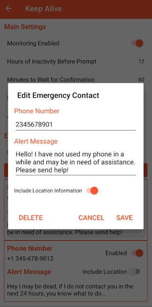

装了半年 Keep Alive，我终于把它从"安全神器"改成了"过日子工具"
从默认参数到手调触发时长、从单联系人到五人网、从官方渠道换到不敢乱动，一个慢性高血压患者的长期使用报告。
为什么装它——一句带过
半年前独自去重庆出差，住的民宿在十八梯附近那条拐了三次弯的巷子里。凌晨三点起来喝水，天旋地转差点摔在地上，扶着墙撑了十分钟才缓过来。那时候手机就在床头，但我连伸手拿起来解锁的力气都没有。回来之后，第一件事就是去它的官网下了 Keep Alive。
变化三连：越用越顺手的部分
参数从"默认值"到"我自己的值"
一开始什么都没改，触发时长用默认的 24 小时，Rest Period（休息时段）也没设。结果第三天就差点误报——那天坐成都到西安的高铁，整段 8 小时没碰手机（真的在睡觉和看窗外），Keep Alive 在第 11 小时的时候发了一条"X 小时没动手机"的提醒通知给我自己。不是真的触发预警，但那种"差一点"的感觉让人不舒服。
后来慢慢摸透了参数该怎么调。触发时长从 24 小时降到 12 小时——健康人正常清醒状态下 12 小时不碰手机基本不可能，开会、看电影、高铁都压在 12 小时以内。Rest Period 终于设对了：一开始以为它是"这段时间不触发"就够了，结果设了个 22:00–08:00，后来才发现自己经常熬夜到 1 点才睡。现在 Rest Period 设成了 23:00–09:30，和我的实际作息对齐。
最隐蔽的那个参数——确认等待时长（Confirmation Wait）——我花了三个月才调到合适的值。默认值是 60 秒，我一开始觉得太短就改成了 180 秒。后来想了想：真出事的时候，60 秒和 180 秒的差距是两分钟的延迟，但"醒过来手忙脚乱找取消按钮"的概率也更大。最后定在 120 秒，给自己留够反应时间，也不拖预警的后腿。
多联系人从"一个老婆"到"五个人的保险网"
刚开始只加了我老婆一个人。后来翻它的文档，发现最多支持 5 位紧急联系人，就琢磨着扩充一下。作为慢性高血压患者，我发病的特点是"频率可能高于健康人，但不一定每次都严重"——有时候只是头晕一阵就过去了，但万一真的是心脏病发作或中风，那就是分秒必争的事。
现在的五人组合是：老婆（第一优先级，写了"我有 X 小时没动手机了，帮我打 120，定位在下面"）、我姐（她也有高血压，能快速判断情况）、社区家庭医生（"医生您好，我是老杨，X 小时没动手机了"）、对门邻居（远亲不如近邻，他退伍军人身体好）、同住的老母亲（虽然她不会用智能手机打电话，但能看见我家大门的动静）。

求助文案我改了三版才定稿。第一版写的是"帮我看看我怎么了"——太模糊，对方收到短信第一反应是"这个人是谁？什么情况？"，还要花时间确认身份和严重程度。第二版加了名字，但还是没说"需要 120"。最终版把"多久没动手机"和"我是谁"和"需要急救"三件事打包写进第一句——对方不用读第二遍就知道该做什么。
定位短信和免提电话，一次测试就决定全开
定位开关我一开始只给老婆开，后来想了想：真出事的时候，社区医生也得知道我在哪才能指导送医路线，邻居也得知道我住几层。现在每一位联系人的 Include Location 开关都是开着的。
免提电话（Call Phone Number）功能我是认真测试过的。在客厅放着手机，走到厨房关上门——Keep Alive 触发后自动拨号到我老婆手机，自动开免提，通话持续到她手动挂断。隔着两道门她能听到客厅的环境音。这个功能和短信是互补关系：短信解决"对方能收到信息"，免提电话解决"对方能听到现场声音"。如果我意识模糊到无法接电话，但手机在旁边，打出去的电话可能吸引路人注意，甚至我听到电话铃声还有机会伸手接听。

越用越烦的部分
换渠道 = 重设所有东西
最烦的一次是签名不一致。我从 GitHub 官方版换到了从下载拿到的另一个渠道的 APK（当时想试试 Lite 版的轻量体验），结果安装包的签名不同，Android 不给覆盖安装——只能先卸载再装新版。Keep Alive 没有账号体系，卸载的那一刻，联系人、文案、参数、权限，全部清零。我花了半小时重新填，一边填一边骂自己手贱。
从那之后我的原则变成了：选定一个渠道就一直用，永远不换。Lite 版和完整版是不同包名，可以同时装不冲突，但我也没装——两个 APP 同时跑监测，参数还得各配一份，麻烦。
误报：它不会自动区分"今天我在外面"和"今天我在家"
Keep Alive 不会读日历、不会读位置、不会读社交软件状态。它只看一个东西：手机有没有被人碰过。所以每次出差或加班晚归，我都得手动把触发时长从 12 小时改成 1 小时左右，Rest Period 临时清空（或者只设确定会睡觉的时段），出门前开监测，到家后关监测，再把参数改回去。
如果忘了改参数怎么办？上个月去上海出差，忘了调触发时长，在酒店睡了一觉起来 Keep Alive 发了条提醒——离真触发只差几个小时。不是误报，但那种"差一点"的紧张感让人不舒服。
我试过设一个中间值（6 小时）来兼顾居家和出行，结果发现居家的时候 6 小时也太长（正常在家不可能 6 小时不碰手机），出行的时候 6 小时又太短（高铁就能超过 6 小时）。折中方案从来不是好方案。
权限授予的折腾
Keep Alive 需要 SMS、Location、Phone、Notifications 四个权限。加上免提电话需要的 InCallService 后台通话权限——这个在部分国产 ROM 上需要额外操作。我现在用的是某国产手机（具体就不说了），免提电话的后台扬声器控制被 ROM 拦截过一次，折腾了十分钟才在系统设置里找到"允许后台改变音频设置"的开关。
每次换手机或恢复出厂设置，这一堆权限重新授予的过程都要走一遍，像在给新生的系统念一遍安全誓词。
哪个功能成了每天离不开的？哪个碰都没再碰？
离不开的：免提电话。短信是"被动等对方行动"，免提电话是"主动建立连接"。真出事的时候，能打通的电话比能收到的短信更有价值。Lite 版支持免提电话——它只缺少 Webhook 和 HTTP 权限那一路，电话功能不受影响。说实话，如果哪天我确定不需要 Webhook 联动了，可能直接换 Lite 版，更轻量。
碰都没再碰的：夜间参数优化。我后来才发现 Keep Alive 本身有 Rest Period 机制，能让触发时段避开睡觉时间。我之前一直在"手动调触发时长"上纠结，其实只要把 Rest Period 设准了，固定一个合理的触发时长就够了。绕了一大圈又回到原点。
观感修正：高估了什么，低估了什么
高估了"自动场景识别"。一开始以为 Keep Alive 会根据我是在家还是在外面自动调参数——结果它根本不做这个判断。它就是个定时器：手机多久没动了？超过阈值了吗？超过了就发信号。这种"纯粹"反而让它很稳定，不会因为误判场景而漏发预警，但也意味着每次场景切换我得手动介入。
低估了"被动监测"的优势。市面上很多"安全 APP"是主动监测——持续获取你的位置、持续读你的活动状态、持续上报云端。Keep Alive 只看"手机有没有被碰过"这个单一信号，逻辑简单到有点简陋，但也意味着它不耗电、不偷数据、不需要联网。我现在反而觉得这种"被动"是优点——一个安全工具，别反过来变成安全隐患。
最反直觉的一点：Lite 版可能比完整版更适合大多数人。完整版的四路预警出口（短信、免提电话、Webhook、网络）里，普通用户真正常用的就是短信和免提电话。Webhook 联动需要 Home Assistant 或类似的自动化平台，对普通人来说太复杂。Lite 版砍掉了网络权限，反而更干净。
去留结论
Keep Alive 会一直在我手机上。不是因为它完美，是因为它在那个"动不了但需要求助"的场景里没有任何替代品。能手动打 120 的永远手动打，但 Keep Alive 兜住的是"手动不了"的那条底线。
如果哪天出现更好的东西——比如能自动识别场景、能云备份配置、能检测跌倒的 APP——我会考虑换。但那个信号还没出现。
卸载它的信号倒是很明确：要么它的更新开始强制加广告，要么签名机制继续混乱到让我重装三次以上。在那之前，它就是我手机里的"过日子工具"——不惊艳，不抢镜，但每天都在。顺手说一句，Keep Alive 的版本档案在GitHub有托管，国内访问慢的话Gitee和GitCode也都有同步。